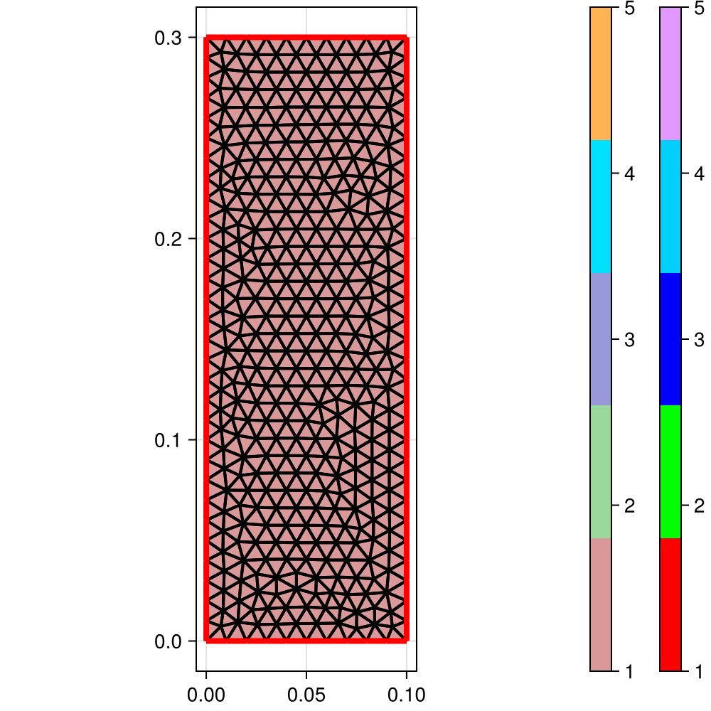
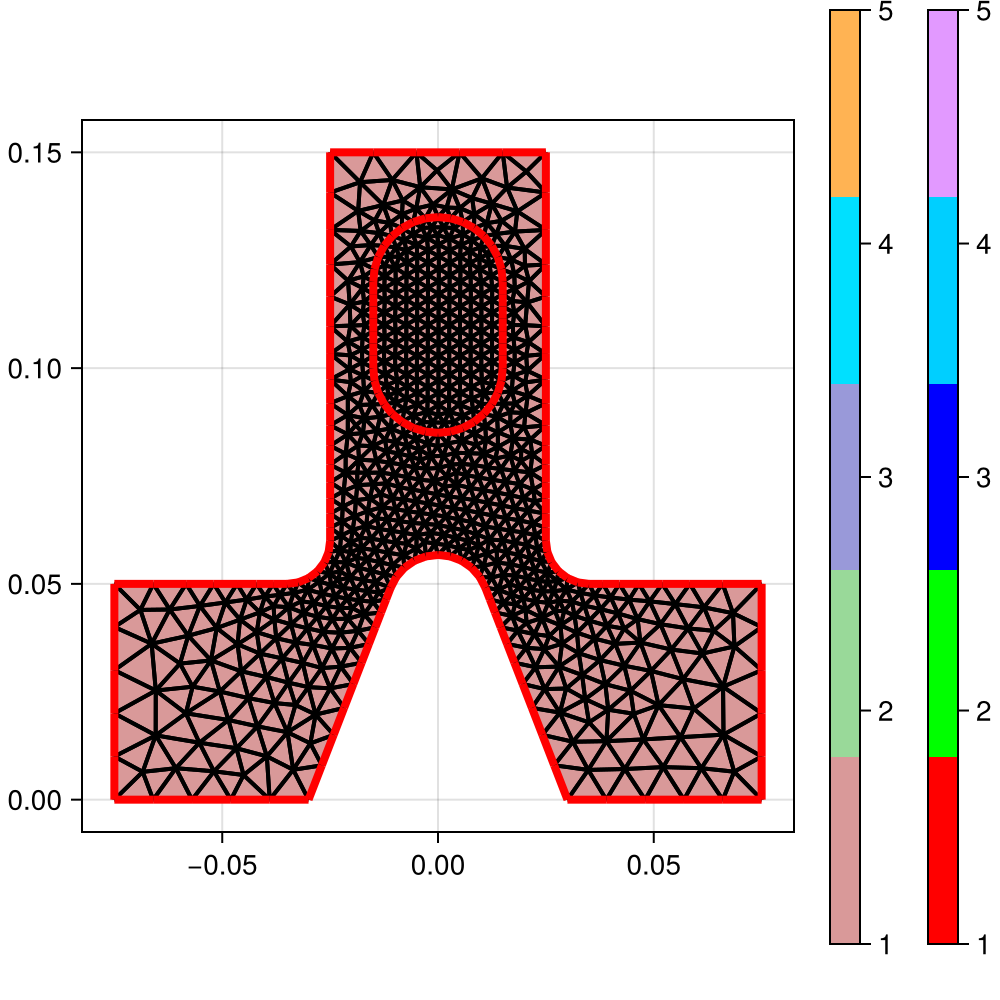

Gmsh examples
using ExtendableGrids
using Gmsh: gmshExample t1 from the GMSH docs
function gmsh_t1()
gmsh.initialize()
gmsh.option.setNumber("General.Terminal", 1)
gmsh.model.add("t1")
lc = 1e-2
gmsh.model.geo.addPoint(0, 0, 0, lc, 1)
gmsh.model.geo.addPoint(0.1, 0, 0, lc, 2)
gmsh.model.geo.addPoint(0.1, 0.3, 0, lc, 3)
p4 = gmsh.model.geo.addPoint(0, 0.3, 0, lc)
gmsh.model.geo.addLine(1, 2, 1)
gmsh.model.geo.addLine(3, 2, 2)
gmsh.model.geo.addLine(3, p4, 3)
gmsh.model.geo.addLine(4, 1, p4)
gmsh.model.geo.addCurveLoop([4, 1, -2, 3], 1)
gmsh.model.geo.addPlaneSurface([1], 1)
gmsh.model.geo.synchronize()
gmsh.model.addPhysicalGroup(0, [1, 2], 1)
gmsh.model.addPhysicalGroup(1, [1, 2], 2)
gmsh.model.addPhysicalGroup(2, [1], 6)
gmsh.model.setPhysicalName(2, 6, "My surface")
gmsh.model.mesh.generate(2)
grid = ExtendableGrids.simplexgrid_from_gmsh(gmsh.model)
gmsh.finalize()
grid
end
Example t4 from the GMSH docs
function gmsh_t4()
gmsh.initialize()
gmsh.model.add("t4")
cm = 1e-02
e1 = 4.5 * cm; e2 = 6 * cm / 2; e3 = 5 * cm / 2
h1 = 5 * cm; h2 = 10 * cm; h3 = 5 * cm; h4 = 2 * cm; h5 = 4.5 * cm
R1 = 1 * cm; R2 = 1.5 * cm; r = 1 * cm
Lc1 = 0.01
Lc2 = 0.003
function hypot(a, b)
return sqrt(a * a + b * b)
end
ccos = (-h5*R1 + e2 * hypot(h5, hypot(e2, R1))) / (h5*h5 + e2*e2)
ssin = sqrt(1 - ccos*ccos)
factory = gmsh.model.geo
factory.addPoint(-e1-e2, 0 , 0, Lc1, 1)
factory.addPoint(-e1-e2, h1 , 0, Lc1, 2)
factory.addPoint(-e3-r , h1 , 0, Lc2, 3)
factory.addPoint(-e3-r , h1+r , 0, Lc2, 4)
factory.addPoint(-e3 , h1+r , 0, Lc2, 5)
factory.addPoint(-e3 , h1+h2, 0, Lc1, 6)
factory.addPoint( e3 , h1+h2, 0, Lc1, 7)
factory.addPoint( e3 , h1+r , 0, Lc2, 8)
factory.addPoint( e3+r , h1+r , 0, Lc2, 9)
factory.addPoint( e3+r , h1 , 0, Lc2, 10)
factory.addPoint( e1+e2, h1 , 0, Lc1, 11)
factory.addPoint( e1+e2, 0 , 0, Lc1, 12)
factory.addPoint( e2 , 0 , 0, Lc1, 13)
factory.addPoint( R1 / ssin, h5+R1*ccos, 0, Lc2, 14)
factory.addPoint( 0 , h5 , 0, Lc2, 15)
factory.addPoint(-R1 / ssin, h5+R1*ccos, 0, Lc2, 16)
factory.addPoint(-e2 , 0.0 , 0, Lc1, 17)
factory.addPoint(-R2 , h1+h3 , 0, Lc2, 18)
factory.addPoint(-R2 , h1+h3+h4, 0, Lc2, 19)
factory.addPoint( 0 , h1+h3+h4, 0, Lc2, 20)
factory.addPoint( R2 , h1+h3+h4, 0, Lc2, 21)
factory.addPoint( R2 , h1+h3 , 0, Lc2, 22)
factory.addPoint( 0 , h1+h3 , 0, Lc2, 23)
factory.addPoint( 0, h1+h3+h4+R2, 0, Lc2, 24)
factory.addPoint( 0, h1+h3-R2, 0, Lc2, 25)
factory.addLine(1 , 17, 1)
factory.addLine(17, 16, 2)
factory.addCircleArc(14,15,16, 3)
factory.addLine(14,13, 4)
factory.addLine(13,12, 5)
factory.addLine(12,11, 6)
factory.addLine(11,10, 7)
factory.addCircleArc(8,9,10, 8)
factory.addLine(8,7, 9)
factory.addLine(7,6, 10)
factory.addLine(6,5, 11)
factory.addCircleArc(3,4,5, 12)
factory.addLine(3,2, 13)
factory.addLine(2,1, 14)
factory.addLine(18,19, 15)
factory.addCircleArc(21,20,24, 16)
factory.addCircleArc(24,20,19, 17)
factory.addCircleArc(18,23,25, 18)
factory.addCircleArc(25,23,22, 19)
factory.addLine(21,22, 20)
factory.addCurveLoop([17,-15,18,19,-20,16], 21)
factory.addPlaneSurface([21], 22)
factory.addCurveLoop([11,-12,13,14,1,2,-3,4,5,6,7,-8,9,10], 23)
factory.addPlaneSurface([23,21], 24)
factory.synchronize()
v = gmsh.view.add("comments")
gmsh.view.addListDataString(v, [10, -10], ["Created with Gmsh"])
gmsh.view.addListDataString(v, [0, 0.11, 0], ["Hole"],
["Align", "Center", "Font", "Helvetica"])
gmsh.view.addListDataString(v, [0, 0.09, 0], ["file://../t4_image.png@0.01x0"],
["Align", "Center"])
gmsh.view.addListDataString(v, [-0.01, 0.09, 0],
["file://../t4_image.png@0.01x0,0,0,1,0,1,0"])
gmsh.view.addListDataString(v, [0, 0.12, 0],
["file://../t4_image.png@0.01x0#"],
["Align", "Center"])
gmsh.view.addListDataString(v, [150, -7], ["file://../t4_image.png@20x0"])
gmsh.view.option.setString(v, "DoubleClickedCommand",
"Printf('View[0] has been double-clicked!');")
gmsh.option.setString(
"Geometry.DoubleClickedLineCommand",
"Printf('Curve %g has been double-clicked!', Geometry.DoubleClickedEntityTag);")
gmsh.model.setColor([(2, 22)], 127, 127, 127)
gmsh.model.setColor([(2, 24)], 160, 32, 240)
gmsh.model.setColor([(1, i) for i in 1:14], 255, 0, 0)
gmsh.model.setColor([(1, i) for i in 15:20], 255, 255, 0)
gmsh.model.mesh.generate(2)
grid = ExtendableGrids.simplexgrid_from_gmsh(gmsh.model)
gmsh.finalize()
grid
end
Example t5 from the GMSH docs
function gmsh_t5()
gmsh.initialize()
gmsh.model.add("t5")
lcar1 = .1
lcar2 = .0005
lcar3 = .055
gmsh.model.geo.addPoint(0.5,0.5,0.5, lcar2, 1)
gmsh.model.geo.addPoint(0.5,0.5,0, lcar1, 2)
gmsh.model.geo.addPoint(0,0.5,0.5, lcar1, 3)
gmsh.model.geo.addPoint(0,0,0.5, lcar1, 4)
gmsh.model.geo.addPoint(0.5,0,0.5, lcar1, 5)
gmsh.model.geo.addPoint(0.5,0,0, lcar1, 6)
gmsh.model.geo.addPoint(0,0.5,0, lcar1, 7)
gmsh.model.geo.addPoint(0,1,0, lcar1, 8)
gmsh.model.geo.addPoint(1,1,0, lcar1, 9)
gmsh.model.geo.addPoint(0,0,1, lcar1, 10)
gmsh.model.geo.addPoint(0,1,1, lcar1, 11)
gmsh.model.geo.addPoint(1,1,1, lcar1, 12)
gmsh.model.geo.addPoint(1,0,1, lcar1, 13)
gmsh.model.geo.addPoint(1,0,0, lcar1, 14)
gmsh.model.geo.addLine(8,9, 1); gmsh.model.geo.addLine(9,12, 2)
gmsh.model.geo.addLine(12,11, 3); gmsh.model.geo.addLine(11,8, 4)
gmsh.model.geo.addLine(9,14, 5); gmsh.model.geo.addLine(14,13, 6)
gmsh.model.geo.addLine(13,12, 7); gmsh.model.geo.addLine(11,10, 8)
gmsh.model.geo.addLine(10,13, 9); gmsh.model.geo.addLine(10,4, 10)
gmsh.model.geo.addLine(4,5, 11); gmsh.model.geo.addLine(5,6, 12)
gmsh.model.geo.addLine(6,2, 13); gmsh.model.geo.addLine(2,1, 14)
gmsh.model.geo.addLine(1,3, 15); gmsh.model.geo.addLine(3,7, 16)
gmsh.model.geo.addLine(7,2, 17); gmsh.model.geo.addLine(3,4, 18)
gmsh.model.geo.addLine(5,1, 19); gmsh.model.geo.addLine(7,8, 20)
gmsh.model.geo.addLine(6,14, 21);
gmsh.model.geo.addCurveLoop([-11,-19,-15,-18], 22)
gmsh.model.geo.addPlaneSurface([22], 23)
gmsh.model.geo.addCurveLoop([16,17,14,15], 24)
gmsh.model.geo.addPlaneSurface([24], 25)
gmsh.model.geo.addCurveLoop([-17,20,1,5,-21,13], 26)
gmsh.model.geo.addPlaneSurface([26], 27)
gmsh.model.geo.addCurveLoop([-4,-1,-2,-3], 28)
gmsh.model.geo.addPlaneSurface([28], 29)
gmsh.model.geo.addCurveLoop([-7,2,-5,-6], 30)
gmsh.model.geo.addPlaneSurface([30], 31)
gmsh.model.geo.addCurveLoop([6,-9,10,11,12,21], 32)
gmsh.model.geo.addPlaneSurface([32], 33)
gmsh.model.geo.addCurveLoop([7,3,8,9], 34)
gmsh.model.geo.addPlaneSurface([34], 35)
gmsh.model.geo.addCurveLoop([-10,18,-16,-20,4,-8], 36)
gmsh.model.geo.addPlaneSurface([36], 37)
gmsh.model.geo.addCurveLoop([-14,-13,-12,19], 38)
gmsh.model.geo.addPlaneSurface([38], 39)
shells = []
sl = gmsh.model.geo.addSurfaceLoop([35,31,29,37,33,23,39,25,27])
push!(shells, sl)
function cheeseHole(x, y, z, r, lc, shells)
p1 = gmsh.model.geo.addPoint(x, y, z, lc)
p2 = gmsh.model.geo.addPoint(x+r,y, z, lc)
p3 = gmsh.model.geo.addPoint(x, y+r,z, lc)
p4 = gmsh.model.geo.addPoint(x, y, z+r, lc)
p5 = gmsh.model.geo.addPoint(x-r,y, z, lc)
p6 = gmsh.model.geo.addPoint(x, y-r,z, lc)
p7 = gmsh.model.geo.addPoint(x, y, z-r, lc)
c1 = gmsh.model.geo.addCircleArc(p2,p1,p7)
c2 = gmsh.model.geo.addCircleArc(p7,p1,p5)
c3 = gmsh.model.geo.addCircleArc(p5,p1,p4)
c4 = gmsh.model.geo.addCircleArc(p4,p1,p2)
c5 = gmsh.model.geo.addCircleArc(p2,p1,p3)
c6 = gmsh.model.geo.addCircleArc(p3,p1,p5)
c7 = gmsh.model.geo.addCircleArc(p5,p1,p6)
c8 = gmsh.model.geo.addCircleArc(p6,p1,p2)
c9 = gmsh.model.geo.addCircleArc(p7,p1,p3)
c10 = gmsh.model.geo.addCircleArc(p3,p1,p4)
c11 = gmsh.model.geo.addCircleArc(p4,p1,p6)
c12 = gmsh.model.geo.addCircleArc(p6,p1,p7)
l1 = gmsh.model.geo.addCurveLoop([c5,c10,c4])
l2 = gmsh.model.geo.addCurveLoop([c9,-c5,c1])
l3 = gmsh.model.geo.addCurveLoop([c12,-c8,-c1])
l4 = gmsh.model.geo.addCurveLoop([c8,-c4,c11])
l5 = gmsh.model.geo.addCurveLoop([-c10,c6,c3])
l6 = gmsh.model.geo.addCurveLoop([-c11,-c3,c7])
l7 = gmsh.model.geo.addCurveLoop([-c2,-c7,-c12])
l8 = gmsh.model.geo.addCurveLoop([-c6,-c9,c2])
s1 = gmsh.model.geo.addSurfaceFilling([l1])
s2 = gmsh.model.geo.addSurfaceFilling([l2])
s3 = gmsh.model.geo.addSurfaceFilling([l3])
s4 = gmsh.model.geo.addSurfaceFilling([l4])
s5 = gmsh.model.geo.addSurfaceFilling([l5])
s6 = gmsh.model.geo.addSurfaceFilling([l6])
s7 = gmsh.model.geo.addSurfaceFilling([l7])
s8 = gmsh.model.geo.addSurfaceFilling([l8])
sl = gmsh.model.geo.addSurfaceLoop([s1, s2, s3, s4, s5, s6, s7, s8])
v = gmsh.model.geo.addVolume([sl])
push!(shells, sl)
return v
end
x = 0
y = 0.75; z = 0; r = 0.09
for t in 1:5
x += 0.166
z += 0.166
v = cheeseHole(x, y, z, r, lcar3, shells)
gmsh.model.geo.addPhysicalGroup(3, [v], t)
end
gmsh.model.geo.addVolume(shells, 186);
gmsh.model.geo.synchronize()
gmsh.model.addPhysicalGroup(3, [186], 10);
gmsh.model.mesh.generate(3)
grid = ExtendableGrids.simplexgrid_from_gmsh(gmsh.model)
gmsh.finalize()
grid
end
CI callbacks for ExampleJuggler.jl
Unit tests
using Test
function runtests()
ok(grid)= num_nodes(grid) > 0 && num_cells(grid) > 0 && num_bfaces(grid) > 0
@test ok(gmsh_t1())
@test ok(gmsh_t4())
@test ok(gmsh_t5())
endPlot generation
using GridVisualize
function generateplots(picdir; Plotter = nothing)
if isdefined(Plotter, :Makie)
size = (500, 500)
Plotter.save(joinpath(picdir, "gmsh_t1.png"), gridplot(gmsh_t1(); Plotter, size))
Plotter.save(joinpath(picdir, "gmsh_t4.png"), gridplot(gmsh_t4(); Plotter, size))
Plotter.save(joinpath(picdir, "gmsh_t5.png"), gridplot(gmsh_t5(); Plotter, size))
end
endThis page was generated using Literate.jl.